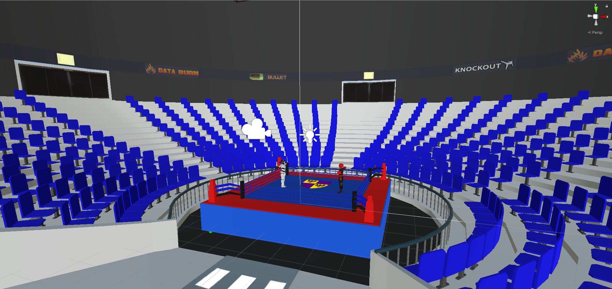
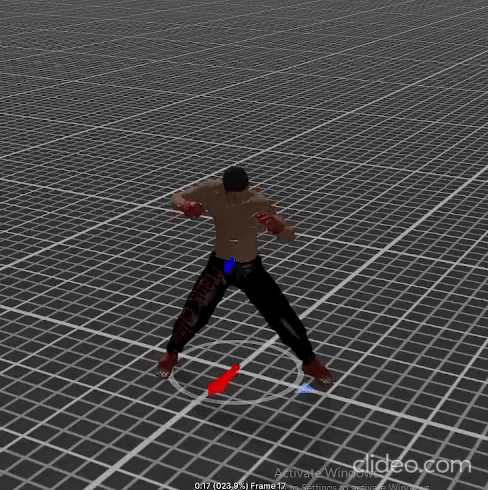
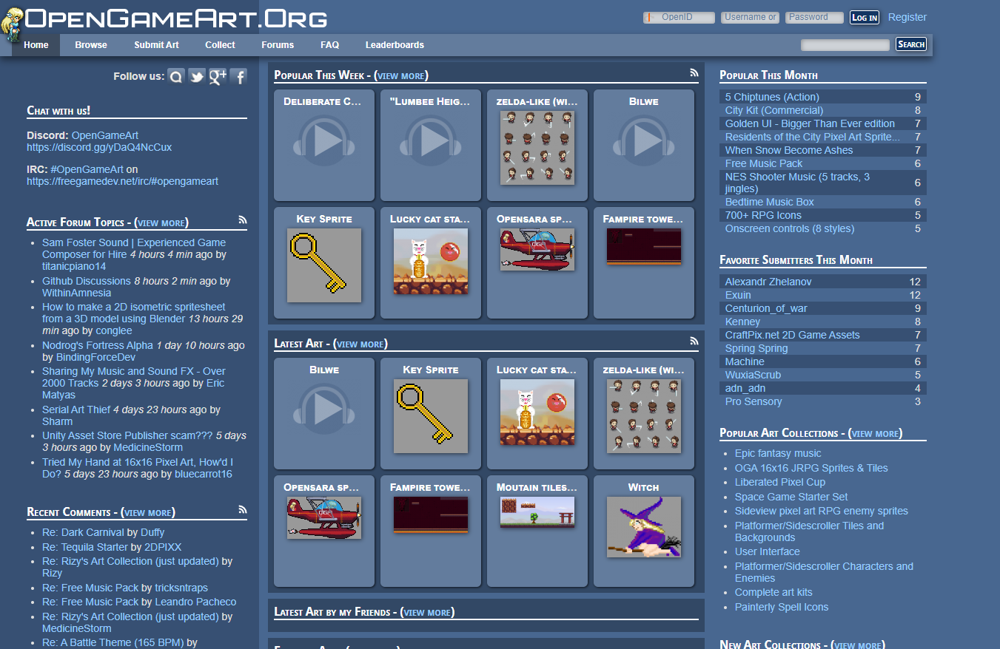
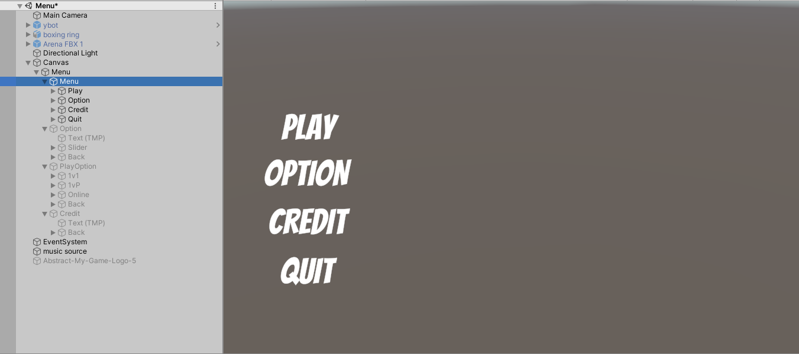
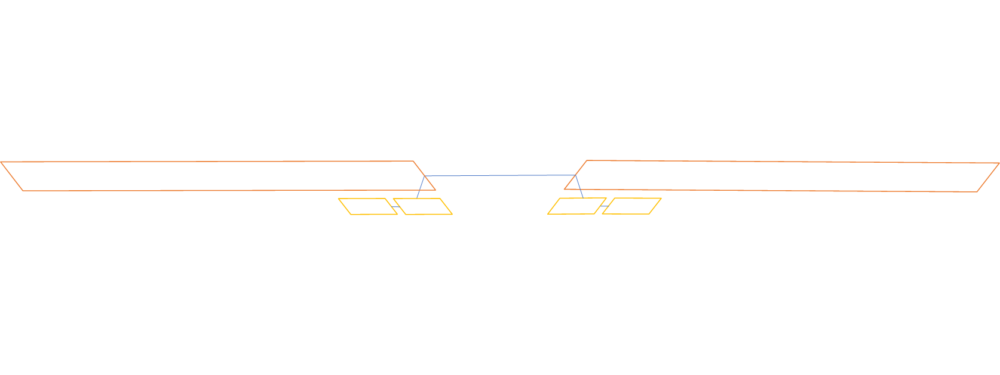
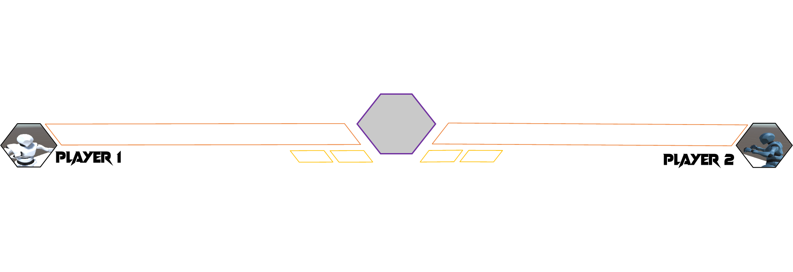
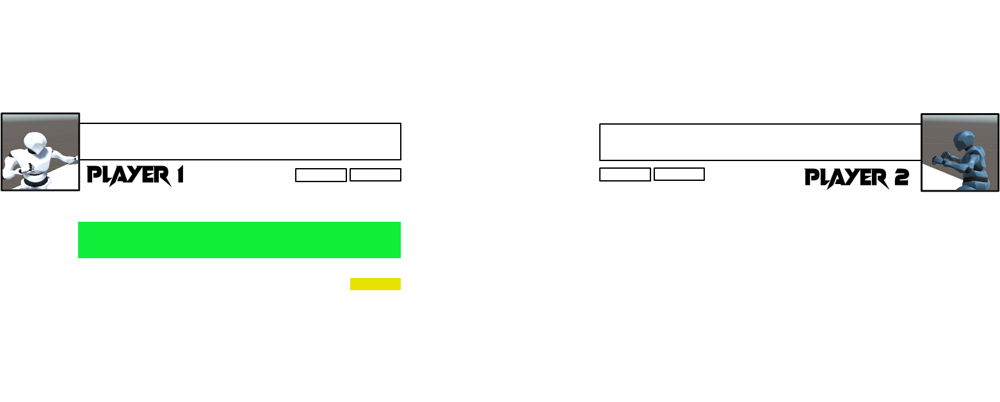
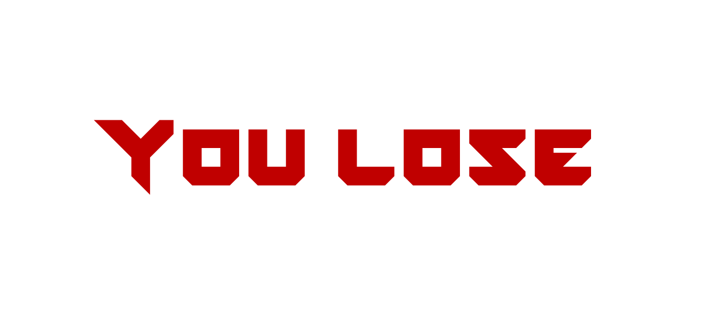
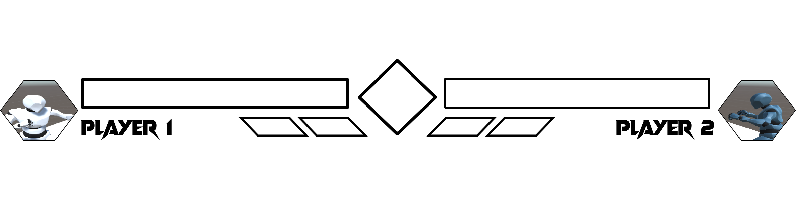
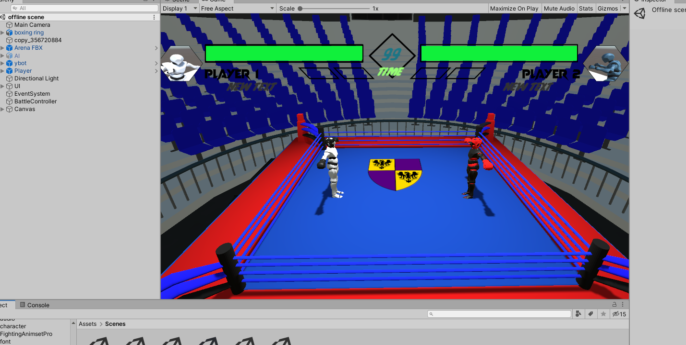

Graphic design
In this part, we mostly use blender as our main source to generate graphic and model for the game.
Since the scope of the game is to make a 2,5 to 3D game, which will require the graphic and models from the game must be 3d model. That make Blender 3d become the best platform for use to generate the graphic for the game.
There are many tutorials from the internet to learn making 3d models with Blender 3d, there are no limit to the model you can make with blender. For this specific game, we have implemented the character model and the stage model using blender.
For the surrounding area, we decided to download a free model of a stadium on internet as the surroundings areas.
All the files from blender and the stadium files are in .fbx form and can be dragged and dropped directly to Unity. In our project folder, there are a prefabricated folder which holding all the material and models of the game. Which can be used later in developing the game.
Animation
For a fighting game like Boomboxing, it is necessary that the character must move and throw punches in a form of a boxer, or at least have the movement animations so that player can see exactly what the character are doing.
Blender also supplies helps for developer in making animations for the character which has been created by blender. But for the ease of use and judging from the professional perspective, the animation that we make cannot be like an actual action in real life. For that reason, our group have decided to use download pre-made animations from Mixamo.com, a website that allow people to upload or download animation for different action that their need (it can be for other reasons beside game making). Most of the animation that we used in Boom Boxing were downloaded and import to unity from mixamo.com, since animation is a common term to Unity game making.
There is no difficulty in importing all the model into our project. One note for this is that the animation for human can only be applied for human models, otherwise, Unity will throw an error.
Audio
Audio is also a needed material in making a video game, although it does not affect the game, but it has an enormous impact in encouraging player feeling and mood when playing the game.
An easy example for this can be seen from the game Flappy Bird, the implementation of the game is amazingly simple but by choosing and design the music wisely, the player will want to play the game increasingly.
In this project, we have download free music instead of making our own (which will require a lot of effort). The music is downloaded from OpengameArt.org, which supply not only the sound effect for the game but there is also background music to be used for designing menu, …
HUD
Similar to all the game on the marker currently, Hud design are compulsory. Menu and HP bars with time counting are the 2 components in this project that require the use of HUD.
For these 2 components, we have designed them with the help of Unity. Unity does provide method to add HUD to the game as well as adding the button to the game. The only need is C# file which connect these components from Unity object and gives conditions so those HUD components can be interactable.
There are 3 files in the Script section of the project, which are HUDcontroller.cs, menumanagement.cs and pausemenu.cs. These 3 files connect with the HUD components and make them work as we want it to be. As a result, this picture is to show all main HUD appear in our game.
We come up with many ideas for the HP bar in game and other HUD component.
   This the final option.
 